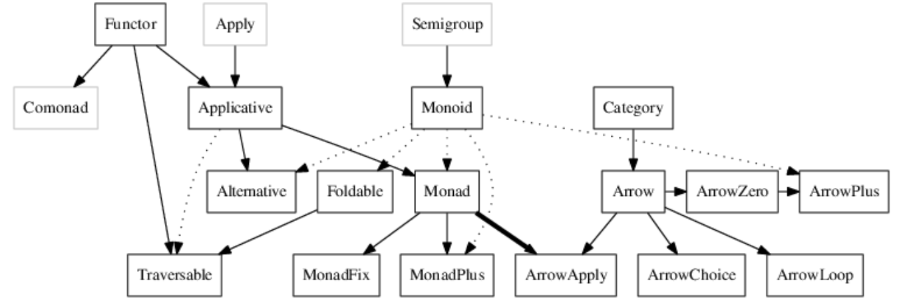

Haskell Workshops
Adam Szlachta
adam.szlachta@gmail.com


Influenced by
Clean, FP, Gofer, Hope and Hope+, Id, ISWIM, KRC, Lisp, Miranda, ML and Standard ML, Orwell, SASL, Scheme, SISAL
Influenced
Agda, Bluespec, C++11/Concepts, C#/LINQ, CAL, Cayenne, Clean, Clojure, CoffeeScript, Curry, Elm, Epigram, Escher, F#, Frege, Hack, Idris, Isabelle, Java/Generics, LiveScript, Mercury, Ωmega, Perl 6, Python, Rust, Scala, Swift, Timber, Visual Basic 9.0


Stack
$ git --version
git version 2.16.1
$ ghc --version ⏎ dktn@DktnMBP 2:48:57AM
The Glorious Glasgow Haskell Compilation System, version 8.2.2
$ stack --version
Version 1.6.3 x86_64 hpack-0.20.0
$ stack ghc -- --version dktn@DktnMBP 2:49:28AM
The Glorious Glasgow Haskell Compilation System, version 8.2.2
Haskell
-
Functions
-
Types
- type signatures
- algebraic datatypes (ADTs)
- newtypes, type aliases
-
Classes
- instances
$ ghci
λ :t "abc"
"abc" :: [Char]
λ :t \x -> x
\x -> x :: p -> p
λ :t \x y -> x + y
\x y -> x + y :: Num a => a -> a -> a
λ let f x = x + 5
λ :t f
f :: Num a => a -> a
λ :i String
type String = [Char] -- Defined in ‘GHC.Base’
λ :k String
String :: *
:load (:l)
:reload (:r)
:type (:t)
:kind (:k)
:info (:i)
:quit (:q)
:help (:h, :?)
:browse
:show bindings
λ :i Int
data Int = GHC.Types.I# GHC.Prim.Int# -- Defined in ‘GHC.Types’
instance Eq Int -- Defined in ‘GHC.Classes’
instance Ord Int -- Defined in ‘GHC.Classes’
instance Show Int -- Defined in ‘GHC.Show’
instance Read Int -- Defined in ‘GHC.Read’
instance Enum Int -- Defined in ‘GHC.Enum’
instance Num Int -- Defined in ‘GHC.Num’
instance Real Int -- Defined in ‘GHC.Real’
instance Bounded Int -- Defined in ‘GHC.Enum’
instance Integral Int -- Defined in ‘GHC.Real’
λ :i Num
class Num a where
(+) :: a -> a -> a
(-) :: a -> a -> a
(*) :: a -> a -> a
negate :: a -> a
abs :: a -> a
signum :: a -> a
fromInteger :: Integer -> a
{-# MINIMAL (+), (*), abs, signum, fromInteger, (negate | (-)) #-}
-- Defined in ‘GHC.Num’
instance Num Word -- Defined in ‘GHC.Num’
instance Num Integer -- Defined in ‘GHC.Num’
instance Num Int -- Defined in ‘GHC.Num’
instance Num Float -- Defined in ‘GHC.Float’
instance Num Double -- Defined in ‘GHC.Float’
class Monoid a where
mempty :: a
mappend :: a -> a -> a
mconcat :: [a] -> a
{-# MINIMAL mempty, mappend #-}
-- Defined in ‘GHC.Base’
instance Monoid [a] -- Defined in ‘GHC.Base’
instance Monoid Ordering -- Defined in ‘GHC.Base’
instance Monoid a => Monoid (Maybe a) -- Defined in ‘GHC.Base’
instance Monoid a => Monoid (IO a) -- Defined in ‘GHC.Base’
instance Monoid b => Monoid (a -> b) -- Defined in ‘GHC.Base’
-- ...
instance Monoid () -- Defined in ‘GHC.Base’
instance Monoid [a] where
{-# INLINE mempty #-}
mempty = []
{-# INLINE mappend #-}
mappend = (++)
{-# INLINE mconcat #-}
mconcat xss = [x | xs <- xss, x <- xs]
data Bool = True | False
data Ordering = LT | EQ | GT
data Maybe a = Nothing | Just a -- parametric polymorphism
data Either a b = Left a | Right b
data List a = Nil | Cons a (List a) -- recursion
data Tree a = Empty
| Node a (Tree a) (Tree a)
λ let a = Just 7
λ let b = Cons "a" (Cons "b" Nil)
λ let c = Node 'a' (Node 'b' Nil (Node 'c')) Nil
λ 7 /= 3
?
λ :t 7 /= 3
?
λ compare 7 3
?
λ :t compare 7 3
?
data Bool = True | False
deriving (Bounded, Enum, Eq, Ord, Read, Show)
-- automatic instances deriving
data Month = January | February | March
| April | May | June
| July | August | September
| October | November | December
deriving (Show, Eq, Ord)
data Person = Person { firstName :: String
, lastName :: String
, age :: Int
} deriving (Show, Eq, Ord)
λ :t firstName
firstName :: Person -> String
λ :t age
age :: Person -> Int
newtype Age = Age Int
newtype Money = MkMoney Int
newtype Size = Size { size :: Int }
-- another convention: "fromSize"
type IntList = [Int]
type StringTree = Tree String
$ ghci 0646519 dktn@DktnMBP 10:44:49pm
λ let a = Age 7
λ let b = MkMoney 8
λ :t a
?
λ :t b
?
λ a == b
?
a :: Age
b :: Money
• Couldn't match expected type ‘Age’ with actual type ‘Money’
-- save in HelloWorld.hs
module HelloWorld where
main :: IO ()
main = putStrLn "Hello World!"
$ ghci 0646519 dktn@DktnMBP 10:44:49pm
GHCi, version 8.2.2: http://www.haskell.org/ghc/ :? for help
Loaded GHCi configuration from /Users/dktn/.dot/.ghci
λ :l HelloWorld.hs
[1 of 1] Compiling Main ( HelloWorld.hs, interpreted )
Ok, one module loaded.
λ main
Hello World!
$ cat ~/.dot/.ghci 0646519 dktn@DktnMBP 10:45:23pm
:set prompt "\ESC[36mλ \ESC[m"
$ runghc HelloWorld.hs 0646519 dktn@DktnMBP 10:54:41pm
Hello World!
$ stack runghc HelloWorld.hs 0646519 dktn@DktnMBP 10:54:45pm
Hello World!
module HelloWorld where
main :: IO ()
main = do
putStrLn "Hello World!"
putStrLn "Bye."
λ :l HelloWorld.hs
[1 of 1] Compiling HelloWorld ( HelloWorld.hs, interpreted )
Ok, one module loaded.
λ :r
[1 of 1] Compiling HelloWorld ( HelloWorld.hs, interpreted )
Ok, one module loaded.
-- using let ... in
quicksort :: Ord a => [a] -> [a]
quicksort [] = []
quicksort (x:xs) =
let smaller = quicksort [a | a <- xs, a <= x]
larger = quicksort [a | a <- xs, a > x]
in smaller ++ [x] ++ larger
-- using where
quicksort :: Ord a => [a] -> [a]
quicksort [] = []
quicksort (x:xs) = smaller ++ [x] ++ larger
where
smaller = quicksort [a | a <- xs, a <= x]
larger = quicksort [a | a <- xs, a > x]
λ quicksort [ 1, 4, 2, 3, 8 ]
[1,2,3,4,8]
λ quicksort [ "c", "a", "b" ]
["a","b","c"]
Task
max' :: Ord a => a -> a -> a
max' a b -- TODO
if condition -- if expression
then expressionIfTrue
else expressionIfFalse
fun arg1 arg2 -- guards
| cond1 = expr1
| cond2 = expr2
| otherwise = expr3 -- otherwise is a synonym to True
max' :: Ord a => a -> a -> a
max' a b =
if a >= b
then a
else b
max'' :: Ord a => a -> a -> a
max'' a b
| a >= b = a
| otherwise = b
Maximum
(guards, if expression, order of patterns, totality)
maximum' :: Ord a => [a] -> a
maximum' [] = error "why?"
maximum' [x] = x
maximum' (x:xs)
| x > tailMaximum = x
| otherwise = tailMaximum
where tailMaximum = maximum' xs
maximum'' :: Ord a => [a] -> a
maximum'' [] = error "Empty list!"
maximum'' [x] = x
maximum'' (x:xs) =
if x > tailMaximum
then x
else tailMaximum
where tailMaximum = maximum'' xs
maximumTotal :: Ord a => [a] -> Maybe a
maximumTotal [] = undefined
maximumTotal [x] = undefined
maximumTotal (x:xs)
| ???? > tailMaximum = undefined
| otherwise = undefined
where tailMaximum = maximumTotal xs
data Maybe a = Nothing | Just a
maximumTotal :: Ord a => [a] -> Maybe a
maximumTotal [] = Nothing
maximumTotal [x] = Just x
maximumTotal (x:xs)
| Just x > tailMaximum = Just x
| otherwise = tailMaximum
where tailMaximum = maximumTotal xs
λ 3 * 4
12
λ 3 + 4
7
λ True && False
False
λ True && True
True
λ False || True
True
λ not False
True
λ "Hello " ++ "world!"
"Hello world!"
λ import Data.Monoid
λ :i Monoid
class Monoid a where
mempty :: a
mappend :: a -> a -> a
mconcat :: [a] -> a
infixr 6 <>
-- | An infix synonym for 'mappend'.
--
-- @since 4.5.0.0
(<>) :: Monoid m => m -> m -> m
(<>) = mappend
λ "Hello " ++ "world!"
"Hello world!"
λ "Hello " <> "world!"
"Hello world!"
λ (<>) "Hello " "world!"
"Hello world!"
λ "Hello " `mappend` "world!"
"Hello world!"
λ :i (<>)
(<>) :: Monoid m => m -> m -> m -- Defined in ‘Data.Monoid’
infixr 6 <>
λ :i (++)
(++) :: [a] -> [a] -> [a] -- Defined in ‘GHC.Base’
infixr 5 ++
λ True <> False
• No instance for (Monoid Bool) arising from a use of ‘<>’
instance Num a => Monoid (Sum a) -- Defined in ‘Data.Monoid’
instance Num a => Monoid (Product a) -- Defined in ‘Data.Monoid’
instance Monoid Any -- Defined in ‘Data.Monoid’
instance Monoid All -- Defined in ‘Data.Monoid’
instance Monoid [a] -- Defined in ‘GHC.Base’
instance Monoid Ordering -- Defined in ‘GHC.Base’
instance Monoid a => Monoid (Maybe a) -- Defined in ‘GHC.Base’
λ let boolList = [ True, True, False ] λ mconcat boolList:53:1: error: • No instance for (Monoid Bool) arising from a use of ‘mconcat’ • In the expression: mconcat boolList In an equation for ‘it’: it = mconcat boolList λ :i Any newtype Any = Any {getAny :: Bool} -- Defined in ‘Data.Monoid’ -- Boolean monoid under disjunction (||) λ :i All newtype All = All {getAll :: Bool} -- Defined in ‘Data.Monoid’ -- Boolean monoid under conjunction (&&) λ :t map map :: (a -> b) -> [a] -> [b]
λ map Any l
[Any {getAny = True},Any {getAny = True},Any {getAny = False}]
λ mconcat $ map Any boolList
Any {getAny = True}
λ mconcat $ map All boolList
All {getAll = False}
λ Sum 5 <> Sum 6 <> Sum 8
Sum {getSum = 19}
λ mconcat $ map Sum [5, 6, 8]
Sum {getSum = 19}
λ Product 5 <> Product 6 <> Product 8
Product {getProduct = 240}
λ mconcat $ map Product [5, 6, 8]
Product {getProduct = 240}
λ mempty :: Any
Any {getAny = False}
λ mempty :: All
All {getAll = True}
λ mempty :: Num a => Product a
Product {getProduct = 1}
λ mempty :: Num a => Sum a
Sum {getSum = 0}
λ mconcat [ EQ, EQ, LT, EQ ]
LT
λ Sum 5 <> Sum 6 <> Sum 8
Sum {getSum = 19}
λ getSum $ Sum 5 <> Sum 6 <> Sum 8
19
λ getSum . mconcat $ map Sum [5, 6, 8]
19
λ :i ($)
($) :: (a -> b) -> a -> b
infixr 0 $
λ :i (.)
(.) :: (b -> c) -> (a -> b) -> a -> c
infixr 9 .
($) :: (a -> b) -> (a -> b)
(.) :: (b -> c) -> (a -> b) -> (a -> c)
λ appEndo (Endo (+ 2) <> Endo (* 3) <> Endo (+ (-1))) 8
23
λ import Data.Function
λ 8 & appEndo (mconcat $ map Endo [(+ 2), (* 3), (+ (-1))])
23
-- | Monoid under addition.
newtype Sum a = Sum { getSum :: a }
-- | Monoid under multiplication.
newtype Product a = Product { getProduct :: a }
instance Num a => Monoid (Sum a) where
mempty = Sum 0
Sum x `mappend` Sum y = Sum (x + y)
instance Num a => Monoid (Product a) where
mempty = Product 1
Product x `mappend` Product y = Product (x * y)
First class citizen
In programming language design, a first-class citizen (also type, object, entity, or value) in a given programming language is an entity which supports all the operations generally available to other entities. These operations typically include being passed as an argument, returned from a function, and assigned to a variable.
Functions are first class citizens in Haskell.
Currying is implicit. Curried functions are more natural.
Currying
Currying is the technique of translating the evaluation of a function that takes multiple arguments (or a tuple of arguments) into evaluating a sequence of functions, each with a single argument. Currying is related to, but not the same as, partial application.
f :: (a, b) -> c
g :: a -> b -> c
λ :t curry
curry :: ((a, b) -> c) -> a -> b -> c
λ :t uncurry
uncurry :: (a -> b -> c) -> (a, b) -> c
curry :: ((a, b) -> c) -> (a -> b -> c)
uncurry :: (a -> b -> c) -> ((a, b) -> c)
Currying
λ :t curry
curry :: ((a, b) -> c) -> a -> b -> c
λ :t uncurry
uncurry :: (a -> b -> c) -> (a, b) -> c
λ take 3 [1,2,3,4,5]
[1,2,3]
λ :t take
take :: Int -> [a] -> [a]
λ :t take 3
?
λ :t take 3
take 3 :: [a] -> [a]
λ :t take 3 [1,2,3,4,5]
take 3 [1,2,3,4,5] :: Num a => [a]
Kinds
newtype Name = Name String
newtype Identity a = Identity a
newtype State s a = State { runState :: s -> (s, a) }
λ :t Name
Name :: String -> Name
λ :k Name
Name :: *
λ :t Identity
Identity :: a -> Identity a
λ :k Identity
Identity :: * -> *
Kinds
newtype Name = Name String
newtype Identity a = Identity a
newtype State s a = State { runState :: s -> (s, a) }
λ :t State
State :: (s -> (s, a)) -> State s a
λ :k State
State :: * -> * -> *
λ :i (->)
data (->) t1 t2
λ :k (->)
(->) :: * -> * -> *
Algebraic data types
In computer programming, more so functional programming and type theory, an algebraic data type is a kind of composite type, i.e., a type formed by combining other types.
Two common classes of algebraic types are product types (i.e., tuples and records) and sum types, also called tagged or disjoint unions or variant types.
data [] a = [] | a : [a] -- built-in
data List a = Nil | Cons a (List a) -- note recursion!
data Tree = Empty
| Leaf Int
| Node Tree Tree
deriving (Show, Eq)
Algebraic data types
data Tree a = Empty
| Leaf a
| Node Tree Tree
deriving (Show, Eq)
tree :: Tree Int
tree = Node
(Node
(Leaf 3)
(Leaf 8)
)
(Node
(Node
(Leaf 1)
(Node
(Leaf 4)
(Leaf 2)
)
)
(Leaf 9)
)
Algebraic data types
data Tree = Leaf
| Node Tree Tree
deriving (Show, Eq)
longestBranch :: Tree -> Int
longestBranch Leaf = 0
longestBranch (Node b1 b2) =
1 + max (longestBranch b1) (longestBranch b2)
shortestBranch :: Tree -> Int
shortestBranch Leaf = 0
shortestBranch (Node b1 b2) =
1 + min (shortestBranch b1) (shortestBranch b2)
isSubtree :: Tree -> Tree -> Bool
isSubtree Leaf Leaf = True
isSubtree (Node _ _) Leaf = False
isSubtree t1 t2@(Node b1 b2) =
t1 == t2 || isSubtree t1 b1 || isSubtree t1 b2
Basic functional building blocks
λ const (+) 1 2 3
λ const 1 (+)
-- what are the results?
λ :t const
const :: a -> b -> a
λ const (+) 1 2 3
5
λ const 1 (+)
1
λ :t id
id :: a -> a
λ id 8
8
Basic functional building blocks
λ :t ($) -- what does it do?
($) :: (a -> b) -> a -> b
λ ($) (++ "!") "Hello" -- what is the result?
λ :t (++ "!")
(++ "!") :: [Char] -> [Char]
λ :t (.) -- what does it do?
(.) :: (b -> c) -> (a -> b) -> a -> c
λ (+ 2) . (* 2) $ 3 -- what is the result?
Basic functional building blocks
f :: (a -> b -> c) -> b -> a -> c
g :: Int -> a -> [a]
h :: a -> [a]
i :: (a -> b) -> [a] -> [b]
j :: (a -> b -> c) -> [a] -> [b] -> [c]
k :: [a] -> [b] -> [(a, b)]
l :: a -> b -> (a, b)
m :: (b -> a -> b) -> b -> [a] -> b
λ :t flip
flip :: (a -> b -> c) -> b -> a -> c
λ :t replicate
replicate :: Int -> a -> [a]
λ :t repeat
repeat :: a -> [a]
λ :t map
map :: (a -> b) -> [a] -> [b]
Basic functional building blocks
f :: (a -> b -> c) -> b -> a -> c
g :: Int -> a -> [a]
h :: a -> [a]
i :: (a -> b) -> [a] -> [b]
j :: (a -> b -> c) -> [a] -> [b] -> [c]
k :: [a] -> [b] -> [(a, b)]
l :: a -> b -> (a, b)
m :: (b -> a -> b) -> b -> [a] -> b
λ :t zipWith
zipWith :: (a -> b -> c) -> [a] -> [b] -> [c]
λ :t zip
zip :: [a] -> [b] -> [(a, b)]
λ zip [1,2] ["a", "b"]
[(1,"a"),(2,"b")]
λ :t (,)
(,) :: a -> b -> (a, b)
λ let myZip = zipWith (,)
Basic functional building blocks
λ :t map
map :: (a -> b) -> [a] -> [b]
λ :t fmap
fmap :: Functor f => (a -> b) -> f a -> f b
λ :t foldl
foldl :: Foldable t => (b -> a -> b) -> b -> t a -> b
-- task: write functions all, any, sum, product...
λ :t foldr
foldr :: Foldable t => (a -> b -> b) -> b -> t a -> b
Category theory typeclasses
- Monoid
- Functor
- Applicative functor
- Monad
Category theory type classes
λ :set -XDeriveFunctor
λ data Tree a = Leaf a | Node (Tree a) (Tree a)
deriving (Show, Eq, Functor)
λ let tree = Node (Leaf 1) (Leaf 3)
λ fmap (flip replicate '!') tree -- what it will do?
Node (Leaf "!") (Leaf "!!!")
λ :i Functor
class Functor (f :: * -> *) where
fmap :: (a -> b) -> f a -> f b
(<$) :: a -> f b -> f a
{-# MINIMAL fmap #-} -- Defined in ‘GHC.Base’
instance [safe] Functor Tree -- Defined at <interactive>:105:67
instance Functor (Either a) -- Defined in ‘Data.Either’
instance Functor [] -- Defined in ‘GHC.Base’
instance Functor Maybe -- Defined in ‘GHC.Base’
instance Functor IO -- Defined in ‘GHC.Base’
instance Functor ((->) r) -- Defined in ‘GHC.Base’
instance Functor ((,) a) -- Defined in ‘GHC.Base’
λ (flip replicate '!') <$> tree
Category theory type classes
class Functor f where
fmap :: (a -> b) -> f a -> f b
(<$) :: b -> f a -> f b
(<$) = fmap . const
(<$>) :: Functor f => (a -> b) -> f a -> f b
(<$>) = fmap
infixl 4 <$>
λ :t const
const :: a -> b -> a
λ 42 <$ tree -- ?
Node (Leaf 42) (Leaf 42)
Category theory type classes
instance Functor [] where
fmap _ [] = []
fmap g (x:xs) = g x : fmap g xs
instance Functor Maybe where
fmap _ Nothing = Nothing
fmap g (Just a) = Just (g a)
λ :i []
data [] a = [] | a : [a]
λ :i Maybe
data Maybe a = Nothing | Just a
Category theory type classes
λ :i Applicative
class Functor f => Applicative (f :: * -> *) where
pure :: a -> f a
(<*>) :: f (a -> b) -> f a -> f b
(*>) :: f a -> f b -> f b
(<*) :: f a -> f b -> f a
{-# MINIMAL pure, (<*>) #-} -- Defined in ‘GHC.Base’
instance Applicative (Either e) -- Defined in ‘Data.Either’
instance Applicative [] -- Defined in ‘GHC.Base’
instance Applicative Maybe -- Defined in ‘GHC.Base’
instance Applicative IO -- Defined in ‘GHC.Base’
instance Applicative ((->) a) -- Defined in ‘GHC.Base’
instance Monoid a => Applicative ((,) a) -- Defined in ‘GHC.Base’
Category theory type classes
λ :i Monad
class Applicative m => Monad (m :: * -> *) where
(>>=) :: m a -> (a -> m b) -> m b
(>>) :: m a -> m b -> m b
return :: a -> m a
fail :: String -> m a
{-# MINIMAL (>>=) #-} -- Defined in ‘GHC.Base’
instance Monad (Either e) -- Defined in ‘Data.Either’
instance Monad [] -- Defined in ‘GHC.Base’
instance Monad Maybe -- Defined in ‘GHC.Base’
instance Monad IO -- Defined in ‘GHC.Base’
instance Monad ((->) r) -- Defined in ‘GHC.Base’
instance Monoid a => Monad ((,) a) -- Defined in ‘GHC.Base’
Category theory type classes
λ :i Monoid
class Monoid a where
mempty :: a
mappend :: a -> a -> a
mconcat :: [a] -> a
{-# MINIMAL mempty, mappend #-} -- Defined in ‘GHC.Base’
instance Monoid [a] -- Defined in ‘GHC.Base’
instance Monoid Ordering -- Defined in ‘GHC.Base’
instance Monoid a => Monoid (Maybe a) -- Defined in ‘GHC.Base’
instance Monoid a => Monoid (IO a) -- Defined in ‘GHC.Base’
instance Monoid b => Monoid (a -> b) -- Defined in ‘GHC.Base’
instance (Monoid a, Monoid b, Monoid c, Monoid d) => Monoid (a, b, c, d) -- Defined in ‘GHC.Base’
instance (Monoid a, Monoid b, Monoid c) => Monoid (a, b, c) -- Defined in ‘GHC.Base’
instance (Monoid a, Monoid b) => Monoid (a, b) -- Defined in ‘GHC.Base’
instance Monoid () -- Defined in ‘GHC.Base’
Category theory type classes
λ :i Alternative
class Applicative f => Alternative (f :: * -> *) where
empty :: f a
(<|>) :: f a -> f a -> f a
some :: f a -> f [a]
many :: f a -> f [a]
{-# MINIMAL empty, (<|>) #-} -- Defined in ‘GHC.Base’
instance MonadPlus m => Alternative (WrappedMonad m) -- Defined in ‘Control.Applicative’
instance (Control.Arrow.ArrowZero a, Control.Arrow.ArrowPlus a) => Alternative (WrappedArrow a b)
instance Alternative [] -- Defined in ‘GHC.Base’
instance Alternative Maybe -- Defined in ‘GHC.Base’
instance Alternative IO -- Defined in ‘GHC.Base’
Typeclassopedia
Laws of type classes
-- Functor
fmap id = id
fmap (g . h) = (fmap g) . (fmap h)
-- Applicative
pure id <*> v = v
pure f <*> pure x = pure (f x)
u <*> pure y = pure ($ y) <*> u
u <*> (v <*> w) = pure (.) <*> u <*> v <*> w
fmap g x = pure g <*> x
-- Monad
return a >>= k = k a
m >>= return = m
m >>= (\x -> k x >>= h) = (m >>= k) >>= h
return :: a -> f a
pure :: a -> f a
fmap :: (a -> b) -> f a -> f b
(<$>) :: (a -> b) -> f a -> f b
(<*>) :: f (a -> b) -> f a -> f b
(=<<) :: (a -> f b) -> f a -> f b
(>>=) :: m a -> (a -> m b) -> m b
class Monad m where
return :: a -> m a
(>=>) :: (a -> m b) -> (b -> m c) -> (a -> m c)
class Monad m where
return :: a -> m a
(>>=) :: m a -> (a -> m b) -> m b
class Functor m => Monad m where
return :: a -> m a
join :: m (m a) -> m a
Maybe monad
instance Monad Maybe where
return = Just -- pointfree
(Just x) >>= k = k x
Nothing >>= _ = Nothing
Do notation
-- (>>) :: IO a -> IO b -> IO b
-- (>>=) :: IO a -> (a -> IO b) -> IO b
main =
putStrLn "Your name?" >>
getLine >>=
\n -> putStrLn ("Hello, " ++ n)
main = do
putStrLn "Your name?"
n <- getLine
putStrLn ("Hello, " ++ n)
Type inference
λ let f (x, y) = x + y
λ :t f
f :: Num a => (a, a) -> a
λ let g (x, y) = if x > y then x + y else x / 4
λ :t g
g :: (Ord a, Fractional a) => (a, a) -> a
λ let h f g = f . f . g -- pointfree
λ :t h
h :: (b -> b) -> (a -> b) -> a -> b
λ h (+7) (*3) 4
26
Type inference and side effects
-- Test.hs
test x y = do
let z = x + y
print z
return z
-- do -> syntactic sugar for monadic binding: (>>=) and (>>)
λ let f x y = x + y
λ :t f
f :: Num a => a -> a -> a
λ :l Test.hs
λ :t test
test :: (Show t, Num t) => t -> t -> IO t
test :: Int -> Int -> IO Int -- narrow down the type
test x y = do
let z = x + y
print z -- can't use it outside IO!
return z
λ :i IO -- Defined in ‘GHC.Types’
newtype IO a =
GHC.Types.IO
(GHC.Prim.State# GHC.Prim.RealWorld
-> (# GHC.Prim.State# GHC.Prim.RealWorld, a #))
instance Monad IO -- Defined in ‘GHC.Base’
instance Functor IO -- Defined in ‘GHC.Base’
instance Applicative IO -- Defined in ‘GHC.Base’
instance Monoid a => Monoid (IO a) -- Defined in ‘GHC.Base’
import Data.Char
main :: IO ()
main = do
putStrLn "Enter your first name"
firstName <- getLine
putStrLn "Enter your last name"
lastName <- getLine
let capitalFirstName = map toUpper firstName
capitalLastName = map toUpper lastName
putStrLn $ "Hello " ++ capitalFirstName ++ " "
++ capitalLastName ++ "!"
Simply typed lambda calculus
λ :i (->) -- ?
data (->) t1 t2 -- Defined in ‘GHC.Prim’
infixr 0 `(->)`
instance Monad ((->) r) -- Defined in ‘GHC.Base’
instance Functor ((->) r) -- Defined in ‘GHC.Base’
instance Applicative ((->) a) -- Defined in ‘GHC.Base’
instance Monoid b => Monoid (a -> b) -- Defined in ‘GHC.Base’
Barendregt's Lambda Cube
- Terms depending on terms, simply typed lambda calculus (λ→)
- Terms depending on types, or polymorphism.
System F, aka second order lambda calculus (λ2)
- Types depending on types, or type operators.
Simply typed lambda calculus with type operators (λω with underline)
- Types depending on terms, or dependent types yields λΠ (λP), a type system closely related to LF
Barendregt's Lambda Cube

Haskell
Functions
- basic functions (in type classes instances)
- higher-order function
- type constructors (type operators)
- type families
- dependend types (not in full yet)
- type signatures (in type classes)
- algebraic datatypes (ADTs)
- newtypes, type aliases
- laws (not enforced)
- default implementations
- signatures (of functions)
- instances (functions implementations for types)
- automatic deriving
Types
Classes
Haskell
-
We can use type system for:
- Checking if a program has the intended properties
- Guiding a programmer towards a correct program
- Building expressive and generic libraries
Edwin Brady (Idris author)
$ stack new exercises
$ cd exercises
$ ls -la
$ stack setup
$ stack clean
$ stack build
$ stack run exercises-exe
$ stack exec exercises-exe
$ stack ghci
λ import Control.Monad.State
λ :t get
λ :t put
λ :t evalState
λ :t runState
λ :t execState
λ :i MonadState
λ :i StateT
newtype StateT s (m :: * -> *) a
= StateT {runStateT :: s -> m (a, s)}
λ :i WriterT
newtype WriterT w (m :: * -> *) a
= WriterT {runWriterT :: m (a, w)}
λ :i ReaderT
newtype ReaderT r (m :: k -> *) (a :: k)
= ReaderT {runReaderT :: r -> m a}
λ import Control.Monad.State
λ :i MonadState
class Monad m => MonadState s (m :: * -> *) | m -> s where
get :: m s
put :: s -> m ()
state :: (s -> (a, s)) -> m a
λ :i MonadWriter
class (Monoid w, Monad m) =>
MonadWriter w (m :: * -> *) | m -> w where
writer :: (a, w) -> m a
tell :: w -> m ()
listen :: m a -> m (a, w)
pass :: m (a, w -> w) -> m a
λ import Control.Monad.Reader
λ :i MonadReader
class Monad m => MonadReader r (m :: * -> *) | m -> r where
ask :: m r
local :: (r -> r) -> m a -> m a
reader :: (r -> a) -> m a